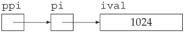
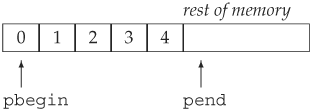

4.2. Introducing PointersJust as we can traverse a vector either by using a subscript or an iterator, we can also traverse an array by using either a subscript or a pointer. A pointer is a compound type; a pointer points to an object of some other type. Pointers are iterators for arrays: A pointer can point to an element in an array. The dereference and increment operators, when applied to a pointer that points to an array element, have similar behavior as when applied to an iterator. When we dereference a pointer, we obtain the object to which the pointer points. When we increment a pointer, we advance the pointer to denote the next element in the array. Before we write programs using pointers, we need to know a bit more about them. 4.2.1. What Is a Pointer?For newcomers, pointers are often hard to understand. Debugging problems due to pointer errors bedevil even experienced programmers. However, pointers are an important part of most C programs and to a much lesser extent remain important in many C++ programs. Conceptually, pointers are simple: A pointer points at an object. Like an iterator, a pointer offers indirect access to the object to which it points. However, pointers are a much more general construct. Unlike iterators, pointers can be used to point at single objects. Iterators are used only to access elements in a container. Specifically, a pointer holds the address of another object:
string s("hello world");
string *sp = &s; // sp holds the address of s
The second statement defines sp as a pointer to string and initializes sp to point to the string object named s. The * in *sp indicates that sp is a pointer. The & operator in &s is the address-of operator. It returns a value that when dereferenced yields the original object. The address-of operator may be applied only to an lvalue (Section 2.3.1, p. 45). Because a variable is an lvalue, we may take its address. Similarly, the subscript and dereference operators, when applied to a vector, string, or built-in array, yield lvalues. Because these operators yield lvalues, we may apply the address-of to the result of the subscript or dereference operator. Doing so gives us the address of a particular element.
4.2.2. Defining and Initializing PointersEvery pointer has an associated type. The type of a pointer determines the type of the objects to which the pointer may point. A pointer to int, for example, may only point to an object of type int. Defining Pointer VariablesWe use the * symbol in a declaration to indicate that an identifier is a pointer:
vector<int> *pvec; // pvec can point to a vector<int>
int *ip1, *ip2; // ip1 and ip2 can point to an int
string *pstring; // pstring can point to a string
double *dp; // dp can point to a double
Reading the definition of pstring from right to left, we see that
string *pstring;
defines pstring as a pointer that can point to string objects. Similarly,
int *ip1, *ip2; // ip1 and ip2 can point to an int
defines ip2 as a pointer and ip1 as a pointer. Both pointers point to ints. The * can come anywhere in a list of objects of a given type:
double dp, *dp2; // dp2 is a ponter, dp is an object: both type double
defines dp2 as a pointer and dp as an object, both of type double. A Different Pointer Declaration StyleThe * symbol may be separated from its identifier by a space. It is legal to write:
string* ps; // legal but can be misleading
which says that ps is a pointer to string. We say that this definition can be misleading because it encourages the belief that string* is the type and any variable defined in the same definition is a pointer to string. However,
string* ps1, ps2; // ps1 is a pointer to string, ps2 is a string
defines ps1 as a pointer, but ps2 is a plain string. If we want to define two pointers in a single definition, we must repeat the * on each identifier:
string* ps1, *ps2; // both ps1 and ps2 are pointers to string
Multiple Pointer Declarations Can Be ConfusingThere are two common styles for declaring multiple pointers of the same type. One style requires that a declaration introduce only a single name. In this style, the * is placed with the type to emphasize that the declaration is declaring a pointer:
string* ps1;
string* ps2;
The other style permits multiple declarations in a single statement but places the * adjacent to the identifier. This style emphasizes that the object is a pointer:
string *ps1, *ps2;
In this book we use the second style and place the * with the pointer variable name. Possible Pointer ValuesA valid pointer has one of three states: It can hold the address of a specific object, it can point one past the end of an object, or it can be zero. A zero-valued pointer points to no object. An uninitialized pointer is invalid until it is assigned a value. The following definitions and assignments are all legal:
int ival = 1024;
int *pi = 0; // pi initialized to address no object
int *pi2 = & ival; // pi2 initialized to address of ival
int *pi3; // ok, but dangerous, pi3 is uninitialized
pi = pi2; // pi and pi2 address the same object, e.g. ival
pi2 = 0; // pi2 now addresses no object
Avoid Uninitialized Pointers
As with any other uninitialized variable, what happens when we use an uninitialized pointer is undefined. Using an uninitialized pointer almost always results in a run-time crash. However, the fact that the crash results from using an uninitialized pointer can be quite hard to track down. Under most compilers, if we use an uninitialized pointer the effect will be to use whatever bits are in the memory in which the pointer resides as if it were an address. Using an uninitialized pointer uses this supposed address to manipulate the underlying data at that supposed location. Doing so usually leads to a crash as soon as we attempt to dereference the uninitialized pointer. It is not possible to detect whether a pointer is uninitialized. There is no way to distinguish a valid address from an address formed from the bits that are in the memory in which the pointer was allocated. Our recommendation to initialize all variables is particularly important for pointers.
If you must define a pointer separately from pointing it at an object, then initialize the pointer to zero. The reason is that a zero-valued pointer can be tested and the program can detect that the pointer does not point to an object. Constraints on Initialization of and Assignment to PointersThere are only four kinds of values that may be used to initialize or assign to a pointer:
It is illegal to assign an int to a pointer, even if the value of the int happens to be 0. It is okay to assign the literal 0 or a const whose value is known to be 0 at compile time:
int ival;
int zero = 0;
const int c_ival = 0;
int *pi = ival; // error: pi initialized from int value of ival
pi = zero; // error: pi assigned int value of zero
pi = c_ival; // ok: c_ival is a const with compile-time value of 0
pi = 0; // ok: directly initialize to literal constant 0
In addition to using a literal 0 or a const with a compile-time value of 0, we can also use a facility that C++ inherits from C. The cstdlib header defines a preprocessor variable (Section 2.9.2, p. 69) named NULL, which is defined as 0. When we use a preprocessor variable in our code, it is automatically replaced by its value. Hence, initializing a pointer to NULL is equivalent to initializing it to 0:
// cstdlib #defines NULL to 0
int *pi = NULL; // ok: equivalent to int *pi = 0;
As with any preprocessor variable (Section 2.9.2, p. 71) we should not use the name NULL for our own variables.
With two exceptions, which we cover in Sections 4.2.5 and 15.3, we may only initialize or assign a pointer from an address or another pointer that has the same type as the target pointer:
double dval;
double *pd = &dval; // ok: initializer is address of a double
double *pd2 = pd; // ok: initializer is a pointer to double
int *pi = pd; // error: types of pi and pd differ
pi = &dval; // error: attempt to assign address of a double to int *
The reason the types must match is that the type of the pointer is used to determine the type of the object that it addresses. Pointers are used to indirectly access an object. The operations that the pointer can perform are based on the type of the pointer: A pointer to int treats the underlying object as if it were an int. If that pointer actually addressed an object of some other type, such as double, then any operations performed by the pointer would be in error. void* PointersThe type void* is a special pointer type that can hold an address of any object:
double obj = 3.14;
double *pd = &obj;
// ok: void* can hold the address value of any data pointer type
void *pv = &obj; // obj can be an object of any type
pv = pd; // pd can be a pointer to any type
A void* indicates that the associated value is an address but that the type of the object at that address is unknown. There are only a limited number of actions we can perform on a void* pointer: We can compare it to another pointer, we can pass or return it from a function, and we can assign it to another void* pointer. We cannot use the pointer to operate on the object it addresses. We'll see in Section 5.12.4 (p. 183) how we can retrieve the address stored in a void* pointer. 4.2.3. Operations on PointersPointers allow indirect manipulation of the object to which the pointer points. We can access the object by dereferencing the pointer. Dereferencing a pointer is similar to dereferencing an iterator (Section 3.4, p. 98). The * operator (the dereference operator) returns the object to which the pointer points:
string s("hello world");
string *sp = &s; // sp holds the address of s
cout <<*sp; // prints hello world
When we dereference sp, we fetch the value of s. We hand that value to the output operator. The last statement, therefore, prints the contents of sthat is, hello world. Dereference Yields an LvalueThe dereference operator returns the lvalue of the underlying object, so we can use it to change the value of the object to which the pointer points:
*sp = "goodbye"; // contents of s now changed
Because we assign to *sp, this statement leaves sp pointing to s and changes the value of s. We can also assign a new value to sp itself. Assigning to sp causes sp to point to a different object:
string s2 = "some value";
sp = &s2; // sp now points to s2
We change the value of a pointer by assigning to it directlywithout dereferencing the pointer.
Comparing Pointers and ReferencesWhile both references and pointers are used to indirectly access another value, there are two important differences between references and pointers. The first is that a reference always refers to an object: It is an error to define a reference without initializing it. The behavior of assignment is the second important difference: Assigning to a reference changes the object to which the reference is bound; it does not rebind the reference to another object. Once initialized, a reference always refers to the same underlying object. Consider these two program fragments. In the first, we assign one pointer to another:
int ival = 1024, ival2 = 2048;
int *pi = &ival, *pi2 = &ival2;
pi = pi2; // pi now points to ival2
After the assignment, ival, the object addressed by pi remains unchanged. The assignment changes the value of pi, making it point to a different object. Now consider a similar program that assigns two references:
int &ri = ival, &ri2 = ival2;
ri = ri2; // assigns ival2 to ival
This assignment changes ival, the value referenced by ri, and not the reference itself. After the assignment, the two references still refer to their original objects, and the value of those objects is now the same as well. Pointers to PointersPointers are themselves objects in memory. They, therefore, have addresses that we can store in a pointer:
int ival = 1024;
int *pi = &ival; // pi points to an int
int **ppi = π // ppi points to a pointer to int
which yields a pointer to a pointer. We designate a pointer to a pointer by using **. We might represent these objects as  As usual, dereferencing ppi yields the object to which ppi points. In this case, that object is a pointer to an int:
int *pi2 = *ppi; // ppi points to a pointer
To actually access ival, we need to dereference ppi twice:
cout << "The value of ival\n"
<< "direct value: " << ival << "\n"
<< "indirect value: " << *pi << "\n"
<< "doubly indirect value: " << **ppi
<< endl;
This program prints the value of ival three different ways. First, by direct reference to the variable. Then, through the pointer to int in pi, and finally, by dereferencing ppi twice to get to the underlying value in ival.
4.2.4. Using Pointers to Access Array ElementsPointers and arrays are closely intertwined in C++. In particular, when we use the name of an array in an expression, that name is automatically converted into a pointer to the first element of the array:
int ia[] = {0,2,4,6,8};
int *ip = ia; // ip points to ia[0]
If we want to point to another element in the array, we could do so by using the subscript operator to locate the element and then applying the address-of operator to find its location:
ip = &ia[4]; // ip points to last element in ia
Pointer ArithmeticRather than taking the address of the value returned by subscripting, we could use pointer arithmetic. Pointer arithmetic works the same way (and has the same constraints) as iterator arithmetic (Section 3.4.1, p. 100). Using pointer arithmetic, we can compute a pointer to an element by adding (or subtracting) an integral value to (or from) a pointer to another element in the array:
ip = ia; // ok: ip points to ia[0]
int *ip2 = ip + 4; // ok: ip2 points to ia[4], the last element in ia
When we add 4 to the pointer ip, we are computing a new pointer. That new pointer points to the element four elements further on in the array from the one to which ip currently points. More generally, when we add (or subtract) an integral value to a pointer, the effect is to compute a new pointer. The new pointer points to the element as many elements as that integral value ahead of (or behind) the original pointer.
Given that ia has 4 elements, adding 10 to ia would be an error:
// error: ia has only 4 elements, ia + 10 is an invalid address
int *ip3 = ia + 10;
We can also subtract two pointers as long as they point into the same array or to an element one past the end of the array:
ptrdiff_t n = ip2 - ip; // ok: distance between the pointers
The result is four, the distance between the two pointers, measured in objects. The result of subtracting two pointers is a library type named ptrdiff_t. Like size_t, the ptrdiff_t type is a machine-specific type and is defined in the cstddef header. The size_t type is an unsigned type, whereas ptrdiff_t is a signed integral type. The difference in type reflects how these two types are used: size_t is used to hold the size of an array, which must be a positive value. The ptrdiff_t type is guaranteed to be large enough to hold the difference between any two pointers into the same array, which might be a negative value. For example, had we subtracted ip2 from ip, the result would be -4. It is always possible to add or subtract zero to a pointer, which leaves the pointer unchanged. More interestingly, given a pointer that has a value of zero, it is also legal to add zero to that pointer. The result is another zero-valued pointer. We can also subtract two pointers that have a value of zero. The result of subtracting two zero-valued pointers is zero. Interaction between Dereference and Pointer ArithmeticThe result of adding an integral value to a pointer is itself a pointer. We can dereference the resulting pointer directly without first assigning it to another pointer:
int last = *(ia + 4); // ok: initializes last to 8, the value of ia[4]
This expression calculates the address four elements past ia and dereferences that pointer. It is equivalent to writing ia[4].
last = *ia + 4; // ok: last = 4, equivalent to ia[0]+4
means dereference ia and add four to the dereferenced value. The parentheses are required due to the precedence of the addition and dereference operators. We'll learn more about precedence in Section 5.10.1 (p. 168). Simply put, precedence stipulates how operands are grouped in expressions with multiple operators. The dereference operator has a higher precedence than the addition operator. The operands to operators with higher precedence are grouped more tightly than those of lower precedence. Without the parentheses, the dereference operator would use ia as its operand. The expression would be evaluated by dereferencing ia and adding four to the value of the element at the beginning of ia. By parenthesizing the expression, we override the normal precedence rules and effectively treat (ia + 4) as a single operand. That operand is an address of an element four past the one to which ia points. That new address is dereferenced. Subscripts and PointersWe have already seen that when we use an array name in an expression, we are actually using a pointer to the first element in the array. This fact has a number of implications, which we shall point out as they arise. One important implication is that when we subscript an array, we are really subscripting a pointer:
int ia[] = {0,2,4,6,8};
int i = ia[0]; // ia points to the first element in ia
When we write ia[0], that is an expression that uses the name of an array. When we subscript an array, we are really subscripting a pointer to an element in that array. We can use the subscript operator on any pointer, as long as that pointer points to an element in an array:
int *p = &ia[2]; // ok: p points to the element indexed by 2
int j = p[1]; // ok: p[1] equivalent to *(p + 1),
// p[1] is the same element as ia[3]
int k = p[-2]; // ok: p[-2] is the same element as ia[0]
Computing an Off-the-End PointerWhen we use a vector, the end operation returns an iterator that refers just past the end of the vector. We often use this iterator as a sentinel to control loops that process the elements in the vector. Similarly, we can compute an off-the-end pointer value:
const size_t arr_size = 5;
int arr[arr_size] = {1,2,3,4,5};
int *p = arr; // ok: p points to arr[0]
int *p2 = p + arr_size; // ok: p2 points one past the end of arr
// use caution -- do not dereference!
In this case, we set p to point to the first element in arr. We then calculate a pointer one past the end of arr by adding the size of arr to the pointer value in p. When we add 5 to p, the effect is to calculate the address of that is five ints away from pin other words, p + 5 points just past the end of arr.
The address we calculated and stored in p2 acts much like the iterator returned from the end operation on vectors. The iterator we obtain from end denotes "one past the end" of the vector. We may not dereference that iterator, but we may compare it to another iterator value to see whether we have processed all the elements in the vector. Similarly, the value we calculated for p2 can be used only to compare to another pointer value or as an operand in a pointer arithmetic expression. If we attempt to dereference p2, the most likely result is that it would yield some garbage value. Most compilers, would treat the result of dereferencing p2 as an int, using whatever bits happened to be in memory at the location just after the last element in arr. Printing the Elements of an ArrayNow we are ready to write a program that uses pointers:
const size_t arr_sz = 5;
int int_arr[arr_sz] = { 0, 1, 2, 3, 4 };
// pbegin points to first element, pend points just after the last
for (int *pbegin = int_arr, *pend = int_arr + arr_sz;
pbegin != pend; ++pbegin)
cout << *pbegin << ' '; // print the current element
This program uses a feature of the for loop that we have not yet used: We may define multiple variables inside the init-statement (Section 1.4.2, p. 14) of a for as long as the variables are defined using the same type. In this case, we're defining two int pointers named pbegin and pend. We use these pointers to traverse the array. Like other built-in types, arrays have no member functions. Hence, there are no begin and end operations on arrays. Instead, we must position pointers to denote the first and one past the last elements ourselves. We do so in the initialization of our two pointers. We initialize pbegin to address the first element of int_arr and pend to one past the last element in the array:  The pointer pend serves as a sentinel, allowing the for loop to know when to stop. Each iteration of the for loop increments pbegin to address the next element. On the first trip through the loop, pbegin denotes the first element, on the second iteration, the second element, and so on. After processing the last element in the array, pbegin will be incremented once more and will then equal pend. At that point we know that we have iterated across the entire array. Pointers Are Iterators for ArraysAstute readers will note that this program is remarkably similar to the program on page 99, which traversed and printed the contents of a vector of strings. The loop in that program
// equivalent loop using iterators to reset all the elements in ivec to 0
for (vector<int>::iterator iter = ivec.begin();
iter != ivec.end(); ++iter)
*iter = 0; // set element to which iter refers to 0
used iterators in much the same way that pointers are used in the program to print the contents of the array. This similarity is not a coincidence. In fact, the built-in array type has many of the properties of a library container, and pointers, when we use them in conjunction with arrays, are themselves iterators. We'll have much more to say about containers and iterators in Part II. 4.2.5. Pointers and the const QualifierThere are two kinds of interactions between pointers and the const qualifier discussed in Section 2.4 (p. 56): We can have pointers to const objects and pointers that are themselves const. This section discusses both kinds of pointers. Pointers to const ObjectsThe pointers we've seen so far can be used to change the value of the objects to which they point. But if we have a pointer to a const object, we do not want to allow that pointer to change the underlying, const value. The language enforces this property by requiring that pointers to const objects must take the constness of their target into account:
const double *cptr; // cptr may point to a double that is const
Here cptr is a pointer to an object of type const double. The const qualifies the type of the object to which cptr points, not cptr itself. That is, cptr itself is not const. We need not initialize it and can assign a new value to it if we so desire. What we cannot do is use cptr to change the value to which it points:
*cptr = 42; // error: *cptr might be const
It is also a compile-time error to assign the address of a const object to a plain, nonconst pointer:
const double pi = 3.14;
double *ptr = π // error: ptr is a plain pointer
const double *cptr = π // ok: cptr is a pointer to const
We cannot use a void* pointer (Section 4.2.2, p. 119) to hold the address of a const object. Instead, we must use the type const void* to hold the address of a const object:
const int universe = 42;
const void *cpv = &universe; // ok: cpv is const
void *pv = &universe; // error: universe is const
A pointer to a const object can be assigned the address of a nonconst object, such as
double dval = 3.14; // dval is a double; its value can be changed
cptr = &dval; // ok: but can't change dval through cptr
Although dval is not a const, any attempt to modify its value through cptr results in a compile-time error. When we declared cptr, we said that it would not change the value to which it points. The fact that it happens to point to a nonconst object is irrelevant.
The fact that values to which a const pointer points can be changed is subtle and can be confusing. Consider:
dval = 3.14159; // dval is not const
*cptr = 3.14159; // error: cptr is a pointer to const
double *ptr = &dval; // ok: ptr points at non-const double
*ptr = 2.72; // ok: ptr is plain pointer
cout << *cptr; // ok: prints 2.72
In this case, cptr is defined as a pointer to const but it actually points at a nonconst object. Even though the object to which it points is nonconst, we cannot use cptr to change the object's value. Essentially, there is no way for cptr to know whether the object it points to is const, and so it treats all objects to which it might point as const. When a pointer to const does point to a nonconst, it is possible that the value of the object might change: After all, that value is not const. We could either assign to it directly or, as here, indirectly through another, plain nonconst pointer. It is important to remember that there is no guarantee that an object pointed to by a pointer to const won't change.
In real-world programs, pointers to const occur most often as formal parameters of functions. Defining a parameter as a pointer to const serves as a contract guaranteeing that the actual object being passed into the function will not be modified through that parameter. const PointersIn addition to pointers to const, we can also have const pointersthat is, pointers whose own value we may not change:
int errNumb = 0;
int *const curErr = &errNumb; // curErr is a constant pointer
Reading this definition from right to left, we see that "curErr is a constant pointer to an object of type int." As with any const, we may not change the value of the pointerthat is, we may not make it point to any other object. Any attempt to assign to a constant pointereven assigning the same value back to curErris flagged as an error during compilation:
curErr = curErr; // error: curErr is const
As with any const, we must initialize a const pointer when we create it. The fact that a pointer is itself const says nothing about whether we can use the pointer to change the value to which it points. Whether we can change the value pointed to depends entirely on the type to which the pointer points. For example, curErr addresses a plain, nonconst int. We can use curErr to change the value of errNumb:
if (*curErr) {
errorHandler();
*curErr = 0; // ok: reset value of the object to which curErr is bound
}
const Pointer to a const ObjectWe can also define a constant pointer to a constant object as follows:
const double pi = 3.14159;
// pi_ptr is const and points to a const object
const double *const pi_ptr = π
In this case, neither the value of the object addressed by pi_ptr nor the address itself can be changed. We can read its definition from right to left as "pi_ptr is a constant pointer to an object of type double defined as const." Pointers and TypedefsThe use of pointers in typedefs (Section 2.6, p. 61) often leads to surprising results. Here is a question almost everyone answers incorrectly at least once. Given the following,
typedef string *pstring;
const pstring cstr;
what is the type of cstr? The simple answer is that it is a pointer to const pstring. The deeper question is: what underlying type does a pointer to const pstring represent? Many think that the actual type is
const string *cstr; // wrong interpretation of const pstring cstr
That is, that a const pstring would be a pointer to a constant string. But that is incorrect. The mistake is in thinking of a typedef as a textual expansion. When we declare a const pstring, the const modifies the type of pstring, which is a pointer. Therefore, this definition declares cstr to be a const pointer to string. The definition is equivalent to
// cstr is a const pointer to string
string *const cstr; // equivalent to const pstring cstr
|